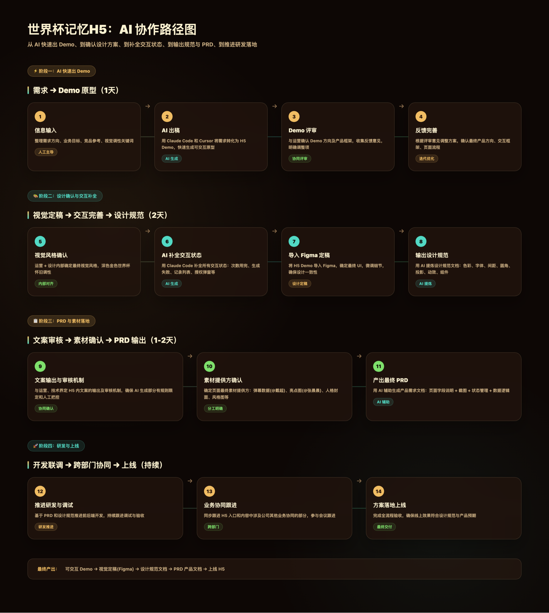
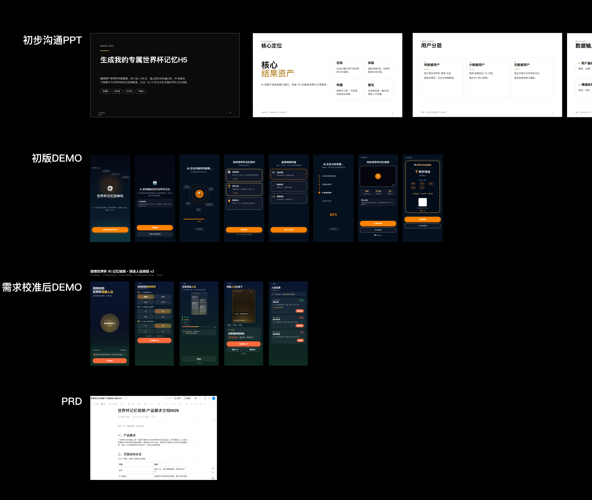
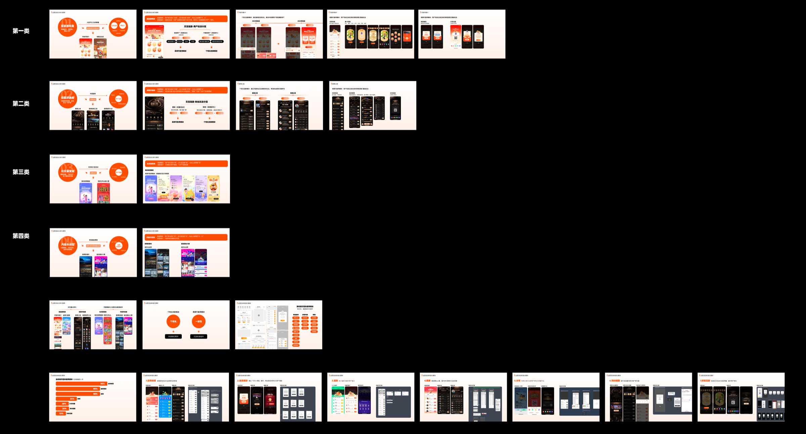
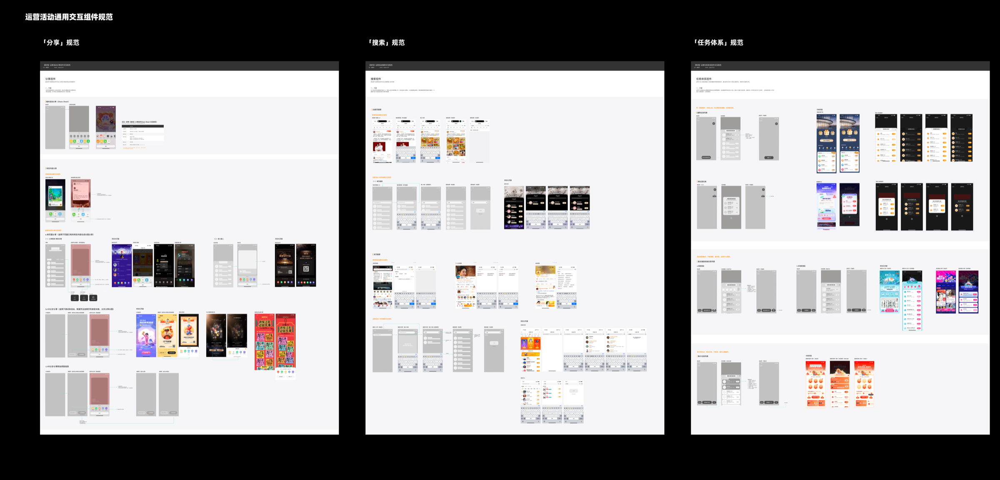
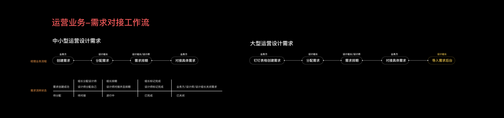
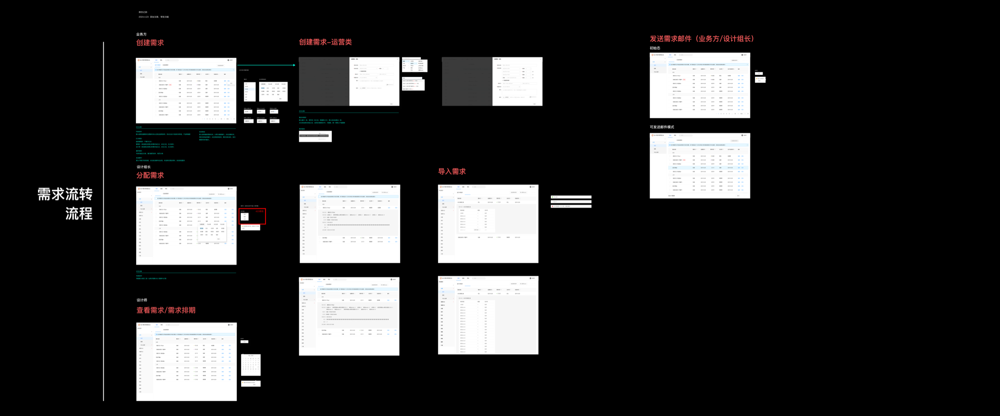
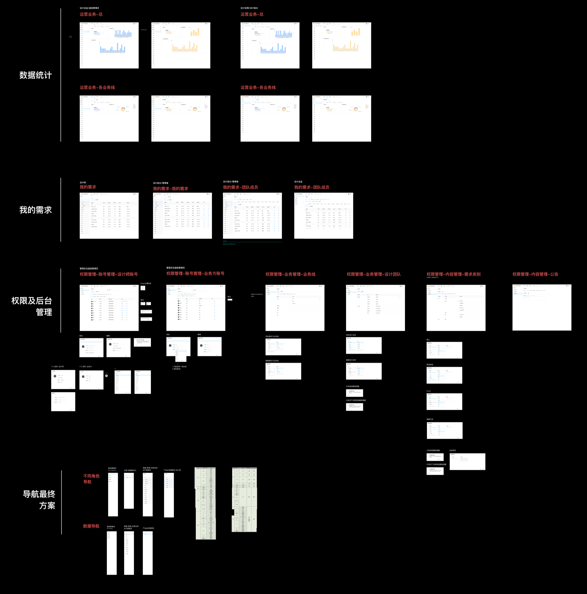
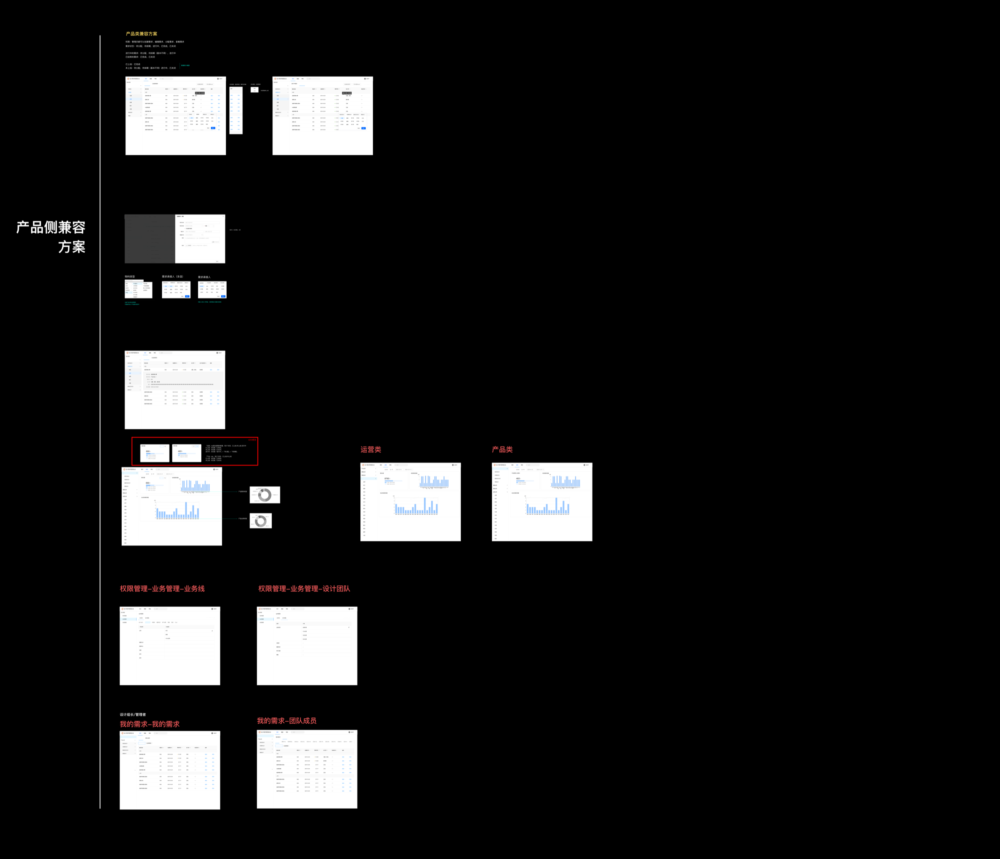

01 / AI Workflow
AI 全链路
从概念、生成体验、代码到后端对接，验证 AI 落地。

01 设计实践总览
01 / AI Workflow
从概念、生成体验、代码到后端对接，验证 AI 落地。
02 / Methodology
把活动机制、任务、激励和异常处理整理成可复用框架。
03 / Guideline
统一高频交互模式，减少重复决策和协作误差。
04 / Design Ops
用产品化方式管理提需、排期、评审、交付与归档。
02 AI 项目全链路探索
AI 生成能力正在改变内容产品的体验边界。相比传统活动页，AI 生成类产品需要同时处理用户输入、生成等待、结果反馈、失败兜底、内容预览和分享传播等复杂体验节点。
这个探索项目围绕“生成我的世界杯记忆视频”展开：从产品概念、页面结构、交互状态、AI Coding 到后端对接，验证如何借助 AI 工作流更快把想法推进到可体验原型阶段。

图片注释：世界杯记忆 H5 的 AI 协作路径图，覆盖快速 Demo、设计确认、规范与 PRD 输出、研发协同上线等完整链路。
产品构思
定义用户要生成什么、为什么生成、生成后如何分享。
生成流程
输入、等待、成功、失败、预览、重试等状态设计。
可运行原型
用 AI Coding 辅助前端实现，并完成后端对接验证。

Prototype Plans
Prototype Plan 01
以强视觉冲击的风格方向切入，重点验证用户通过手势滑动选择视频风格卡片的互动体验，让团队先判断主题选择是否足够直观、有记忆点。
Prototype Plan 02
最终选择该方案最终选择方案二，是因为它更完整地验证了“输入记忆 - 选择主题 - AI 生成 - 视频预览 - 保存分享”的最小闭环核心体验，能支撑后续设计确认与研发协同。
03 运营活动方法论
微博大型运营活动通常涉及复杂任务机制、奖励发放、用户分享、跨端适配、运营配置和高峰期流量承载。每个活动主题不同，但在用户路径、激励反馈和异常状态上存在大量可复用模式。

图片注释：运营活动方法论沉淀，按活动类型、机制链路、共性模块和数据复盘梳理可复用设计框架。
Context
活动项目需要在短周期内承接任务、奖励、分享、规则、异常和跨端适配，重复决策成本高。
What I did
整理活动首页、任务系统、奖励反馈、进度提示、分享召回、规则说明和异常状态等关键模块。
Output
沉淀活动体验链路框架、任务与激励反馈原则、跨端适配注意事项和异常场景清单。
Value
帮助后续活动更快识别关键路径，在强运营节奏下保持体验稳定和交互一致。
04 交互规范沉淀
长期迭代中，不同项目容易出现相似场景重复设计、状态定义不一致、反馈节奏不统一等问题。交互规范的价值不是限制创造，而是把高频场景中的重复决策前置，让团队在同一套逻辑下更快协作。
设计判断
规范沉淀的核心，不是把所有场景做成统一模板，而是明确哪些部分应该保持一致，哪些部分可以为业务目标保留变化空间。

图片注释：运营活动通用交互组件规范，覆盖分享、搜索、任务体系等高频活动组件的结构、状态和使用边界。
05 B端需求管理平台
设计团队在服务多个业务方时，常会面临需求入口分散、优先级不清、排期不可见、状态同步成本高和交付记录难追踪等问题。这个项目目前不展开完整案例，而作为 B 端流程系统和 Design Ops 思考的补充呈现。
01
统一需求入口，收集背景、目标、优先级、时间节点和附件。
02
判断需求类型、设计投入、排期风险和资源分配。
03
进入设计中、评审中、修改中、已交付等状态。
04
沉淀交付记录、延期原因、返工次数和周期数据。

图片注释：需求调研阶段梳理运营业务从创建、分配、排期到导入后台的需求对接工作流和状态口径。



图片注释：高保真交互设计稿拼接展示，覆盖需求创建、分配、排期、导入、角色权限和后台管理等关键流程。
流程透明
把分散沟通转化为可见状态，减少反复确认和遗漏。
管理效率
用数据看板观察需求量、延期率、返工率和交付周期。
能力补位
补充我在 B 端流程系统、权限角色和 Design Ops 方向的思考。
线上效果
视频注释：通过 mockup 录屏呈现上线网站的页面样式、状态切换和后台操作体验。
06 综合价值
这些实践虽然不是完整展开的项目案例，但它们共同构成了我在长期设计工作中的另一部分能力：我不仅关注单个项目能否顺利上线，也关注经验是否能被复用、规则是否能被沉淀、流程是否能被优化，以及新的技术趋势是否能进入真实业务场景。
复用能力
能从多个活动和业务中抽象共性，形成方法论、检查表和流程框架。
规范能力
能沉淀高频交互模式，提升多项目、多角色协作中的一致性。
前沿探索
能将 AI 设计工具、AI Coding 和生成体验纳入真实工作流。
流程意识
能用产品化方式思考团队协作、需求管理和设计交付效率。
对我来说，设计不只是完成界面和交互方案，也包括建立方法、推动协作、验证新工具，并让复杂系统在长期运营中保持清晰、稳定和有温度。